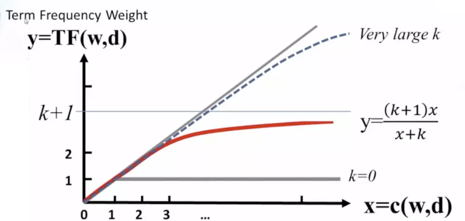
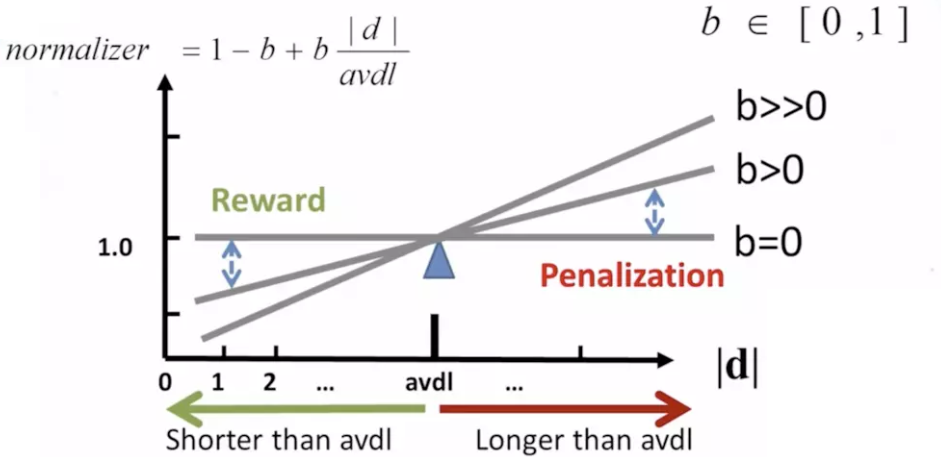

召回过程优化
目标
- 知道优化的方法和思路
- 知道BM25方法的原理和实现
- 能够使用word2vector完成优化过程
1. 优化思路
前面的学习，我们能够返回相似的召回结果，但是，如何让这些结果更加准确呢？
我们可以从下面的角度出发：
- tfidf使用的是词频和整个文档的词语，如果用户问题的某个词语没有出现过，那么此时，计算出来的相似度可能就不准确。该问题的解决思路：
- 对用户输入的问题进行文本的对齐，比如，使用训练好的word2vector，往句子中填充非主语的其他词语的相似词语。例如
python 好学 么 -->填充后是 ：python 好学 么 简单 难 嘛，这里假设word2vector同学会了好学，简单，难他们之间是相似的 - 使用word2vector对齐的好处除了应对未出现的词语，还能够提高主语的重要程度，让主语位置的tfidf的值更大，从而让相似度更加准确
- 对用户输入的问题进行文本的对齐，比如，使用训练好的word2vector，往句子中填充非主语的其他词语的相似词语。例如
- tfidf是一个词袋模型，没有考虑词和词之间的顺序
- 使用n-garm和词一起作为特征，转化为特征向量
- 不去使用tfidf处理句子得到向量。
- 使用BM25算法
- 或者 使用fasttext、word2vector，把句子转化为向
2. 通过BM25算法代替TFIDF
2.1 BM25算法原理
BM25(BM=best matching)是TDIDF的优化版本，首先我们来看看TFIDF是怎么计算的
$$ tfidf_i = tfidf = \frac{词i的数量}{词语总数}log\frac{总文档数}{包含词i的文档数}
$$ 其中tf称为词频，idf为逆文档频率
那么BM25是如何计算的呢？
$$ BM25(i) = \frac{词i的数量}{总词数}\frac{(k+1)C}{C+k(1-b+b\frac{|d|}{avdl}）}log(\frac{总文档数}{包含i的文档数}) \ C = tf=\frac{词i的数量}{总词数},k>0,b\in [0,1]，d为文档i的长度，avdl是文档平均长度
$$ 大家可以看到，BM25和tfidf的计算结果很相似，唯一的区别在于中多了一项，这一项是用来对tf的结果进行的一种变换。
把$1-b+b\frac{d}{avdl}$中的b看成0，那么此时中间项的结果为$\frac{(k+1)tf}{k+tf}$，通过设置一个k，就能够保证其最大值为$1$，达到限制tf过大的目的。
即：
$$ \begin{align} &\frac{(k+1)tf}{k+tf}= \frac{k+1}{1+\frac{k}{tf}} \qquad \qquad \qquad,上下同除tf \end{align}
$$ k不变的情况下，上式随着tf的增大而增大，上限为k+1,但是增加的程度会变小，如下图所示。
在一个句子中，某个词重要程度应该是随着词语的数量逐渐衰减的，所以中间项对词频进行了惩罚，随着次数的增加，影响程度的增加会越来越小。通过设置k值，能够保证其最大值为k+1，k往往取值1.2。
其变化如下图（无论k为多少，中间项的变化程度会随着次数的增加，越来越小）：

同时$1-b+b\frac{d}{avdl}$的作用是用来对文本的长度进行归一化。
例如在考虑整个句子的tdidf的时候，如果句子的长度太短，那么计算的总的tdidf的值是要比长句子的tdidf的值要低的。所以可以考虑对句子的长度进行归一化处理。
可以看到，当句子的长度越短，$1-b+b\frac{|d|}{avdl}$的值是越小，作为分母的位置，会让整个第二项越大，从而达到提高短文本句子的BM25的值的效果。当b的值为0，可以禁用归一化，b往往取值0.75
其变化效果如下：

2.2 BM25算法实现
通过前面的学习，我们知道其实BM25和Tfidf的区别不大，所以我们可以在之前sciket-learn的TfidfVectorizer基础上进行修改，获取我们的BM25的计算结果，主要也是修改其中的fit方法和transform方法
在sklearn的TfidfVectorizer中，首先接受参数，其次会调用TfidfTransformer来完成其他方法的调用
继承TfidfVectorizer完成 参数的接受
from sklearn.feature_extraction.text import TfidfVectorizer,TfidfTransformer,_document_frequency from sklearn.base import BaseEstimator,TransformerMixin from sklearn.preprocessing import normalize from sklearn.utils.validation import check_is_fitted import numpy as np import scipy.sparse as sp class Bm25Vectorizer(CountVectorizer): def __init__(self,k=1.2,b=0.75, norm="l2", use_idf=True, smooth_idf=True,sublinear_tf=False,*args,**kwargs): super(Bm25Vectorizer,self).__init__(*args,**kwargs) self._tfidf = Bm25Transformer(k=k,b=b,norm=norm, use_idf=use_idf, smooth_idf=smooth_idf, sublinear_tf=sublinear_tf) @property def k(self): return self._tfidf.k @k.setter def k(self, value): self._tfidf.k = value @property def b(self): return self._tfidf.b @b.setter def b(self, value): self._tfidf.b = value def fit(self, raw_documents, y=None): """Learn vocabulary and idf from training set. """ X = super(Bm25Vectorizer, self).fit_transform(raw_documents) self._tfidf.fit(X) return self def fit_transform(self, raw_documents, y=None): """Learn vocabulary and idf, return term-document matrix. """ X = super(Bm25Vectorizer, self).fit_transform(raw_documents) self._tfidf.fit(X) return self._tfidf.transform(X, copy=False) def transform(self, raw_documents, copy=True): """Transform documents to document-term matrix. """ check_is_fitted(self, '_tfidf', 'The tfidf vector is not fitted') X = super(Bm25Vectorizer, self).transform(raw_documents) return self._tfidf.transform(X, copy=False)
完成自己的
Bm25transformer,只需要再原来基础的代码上进心修改部分即可。sklearn中的转换器类的实现要求，不能直接继承已有的转换器类class Bm25Transformer(BaseEstimator, TransformerMixin): def __init__(self,k=1.2,b=0.75, norm='l2', use_idf=True, smooth_idf=True, sublinear_tf=False): self.k = k self.b = b ##################以下是TFIDFtransform代码########################## self.norm = norm self.use_idf = use_idf self.smooth_idf = smooth_idf self.sublinear_tf = sublinear_tf def fit(self, X, y=None): """Learn the idf vector (global term weights) Parameters ---------- X : sparse matrix, [n_samples, n_features] a matrix of term/token counts """ _X = X.toarray() self.avdl = _X.sum()/_X.shape[0] #句子的平均长度 # print("原来的fit的数据：\n",X) #计算每个词语的tf的值 self.tf = _X.sum(0)/_X.sum() #[M] #M表示总词语的数量 self.tf = self.tf.reshape([1,self.tf.shape[0]]) #[1,M] # print("tf\n",self.tf) ##################以下是TFIDFtransform代码########################## if not sp.issparse(X): X = sp.csc_matrix(X) if self.use_idf: n_samples, n_features = X.shape df = _document_frequency(X) # perform idf smoothing if required df += int(self.smooth_idf) n_samples += int(self.smooth_idf) # log+1 instead of log makes sure terms with zero idf don't get # suppressed entirely. idf = np.log(float(n_samples) / df) + 1.0 self._idf_diag = sp.spdiags(idf, diags=0, m=n_features, n=n_features, format='csr') return self def transform(self, X, copy=True): """Transform a count matrix to a tf or tf-idf representation Parameters ---------- X : sparse matrix, [n_samples, n_features] a matrix of term/token counts copy : boolean, default True Whether to copy X and operate on the copy or perform in-place operations. Returns ------- vectors : sparse matrix, [n_samples, n_features] """ ########### 计算中间项 ############### cur_tf = np.multiply(self.tf, X.toarray()) #[N,M] #N表示数据的条数，M表示总词语的数量 norm_lenght = 1 - self.b + self.b*(X.toarray().sum(-1)/self.avdl) #[N] #N表示数据的条数 norm_lenght = norm_lenght.reshape([norm_lenght.shape[0],1]) #[N,1] middle_part = (self.k+1)*cur_tf /(cur_tf +self.k*norm_lenght) ############# 结算结束 ################ if hasattr(X, 'dtype') and np.issubdtype(X.dtype, np.floating): # preserve float family dtype X = sp.csr_matrix(X, copy=copy) else: # convert counts or binary occurrences to floats X = sp.csr_matrix(X, dtype=np.float64, copy=copy) n_samples, n_features = X.shape if self.sublinear_tf: np.log(X.data, X.data) X.data += 1 if self.use_idf: check_is_fitted(self, '_idf_diag', 'idf vector is not fitted') expected_n_features = self._idf_diag.shape[0] if n_features != expected_n_features: raise ValueError("Input has n_features=%d while the model" " has been trained with n_features=%d" % ( n_features, expected_n_features)) # *= doesn't work X = X * self._idf_diag ############# 中间项和结果相乘 ############ X = X.toarray()*middle_part if not sp.issparse(X): X = sp.csr_matrix(X, dtype=np.float64) ############# ######### if self.norm: X = normalize(X, norm=self.norm, copy=False) return X @property def idf_(self): ##################以下是TFIDFtransform代码########################## # if _idf_diag is not set, this will raise an attribute error, # which means hasattr(self, "idf_") is False return np.ravel(self._idf_diag.sum(axis=0))完整代码参考：
https://github.com/SpringMagnolia/Bm25Vectorzier/blob/master/BM25Vectorizer.py测试简单使用，观察和tdidf的区别：
```python from BM25Vectorizer import Bm25Vectorizer from sklearn.feature_extraction.text import TfidfVectorizer
if name == 'main':
# format_weibo(word=False)
# format_xiaohuangji_corpus(word=True)
bm_vec = Bm25Vectorizer()
tf_vec = TfidfVectorizer()
# 1. 原始数据
data = [
'hello world',
'oh hello there',
'Play it',
'Play it again Sam,24343,123',
]
# 2. 原始数据向量化
bm_vec.fit(data)
tf_vec.fit(data)
features_vec_bm = bm_vec.transform(data)
features_vec_tf = tf_vec.transform(data)
print("Bm25 result:",features_vec_bm.toarray())
print("*"*100)
print("Tfidf result:",features_vec_tf.toarray())
输出如下：
```python
Bm25 result: [[0. 0. 0. 0.47878333 0. 0.
0. 0. 0. 0.8779331 ]
[0. 0. 0. 0.35073401 0. 0.66218791
0. 0. 0.66218791 0. ]
[0. 0. 0. 0. 0.70710678 0.
0.70710678 0. 0. 0. ]
[0.47038081 0.47038081 0.47038081 0. 0.23975776 0.
0.23975776 0.47038081 0. 0. ]]
**********************************************************************************
Tfidf result: [[0. 0. 0. 0.6191303 0. 0.
0. 0. 0. 0.78528828]
[0. 0. 0. 0.48693426 0. 0.61761437
0. 0. 0.61761437 0. ]
[0. 0. 0. 0. 0.70710678 0.
0.70710678 0. 0. 0. ]
[0.43671931 0.43671931 0.43671931 0. 0.34431452 0.
0.34431452 0.43671931 0. 0. ]]
2.3 修改之前的召回代码
修改之前召回的代码只需要把调用tfidfvectorizer改成调用Bm25vectorizer
3. 使用Fasttext实现获取句子向量
3.1 基础方法介绍
这里我们可以使用fasttext，word2vector等方式实现获取词向量，然后对一个句子中的所有词语的词向量进行平均，获取整个句子的向量表示，即sentence Vector，该实现方法在fasttext和Word2vector中均有实现，而且通过参数的控制，实现N-garm的效果
假设我们有文本a.txt如下：
我 很 喜欢 她
今天 天气 不错
我 爱 深度学习
那么我们可以实现获取句子向量的方法如下
from fastText import FastText
#训练模型，设置n-garm=2
model = FastText.train_unsupervised(input="./a.txt",minCount=1,wordNgrams=2)
#获取句子向量，是对词向量的平均
model.get_sentence_vector("我 是 谁")
3.2 训练模型和封装代码
这里我们使用之前采集的相似文本数据作为训练样本
步骤如下：
- 进行分词之后写入文件中
- 进行模型的训练
- 使用模型获取句子向量，并且封装代码
- 将之前的BM25的代码替换为该代码
3.2.1 分词写入文件
这里我们使用单个字作为特征，只需要注意，英文使用单个词作为特征
"""
使用单个字作为特征，进行fasttext训练，最后封装代码获取召回结果
"""
import string
def word_split(line):
#对中文按照字进行处理，对英文不分为字母
#即 I爱python --> i 爱 python
letters = string.ascii_lowercase+"+"+"/" #c++,ui/ue
result = []
temp = ""
for word in line:
if word.lower() in letters:
temp+=word.lower()
else:
if temp !="":
result.append(temp)
temp = ""
result.append(word)
if temp!="":
result.append(temp)
return result
def process_data():
path1 = r"corpus\final_data\merged_q.txt"
path2 = r"corpus\final_data\merged_sim_q.txt"
save_path = r"corpus\recall_fasttext_data\data.txt"
filter = set()
with open(path1) as f,open(save_path,"a") as save_f:
for line in f:
line = line.strip()
if line not in filter:
filter.add(line)
_temp = " ".join(word_split(line))
save_f.write(_temp+"\n")
with open(path2) as f,open(save_path,"a") as save_f:
for line in f:
line = line.strip()
if line not in filter:
filter.add(line)
_temp = " ".join(word_split(line))
save_f.write(_temp+"\n")
3.2.2 训练模型
训练fasttext的model,用来生成词向量
def train_model(fasttext_model_path): logging.basicConfig(format='%(asctime)s : %(levelname)s : %(message)s', level=logging.INFO) save_path = r"corpus\recall_fasttext_data\data.txt" model = FastText.train_unsupervised(save_path,epoch=20,minCount=3,wordNgrams=2) model.save_model(fasttext_model_path)对现有的QA问答对，生成向量，传入pysparnn中构建索引
def get_base_text_vectors(cp_dump_path,model): #保存到本地pkl文件，防止每次都生成一次 if os.path.exists(cp_dump_path): cp = pickle.load(open(cp_dump_path,"rb")) else: print(QA_dict) q_lines = [q for q in QA_dict] q_cuted_list = [" ".join(word_split(i)) for i in q_lines] lines_vectors = [] for q_cuted in q_cuted_list: lines_vectors.append(model.get_sentence_vector(q_cuted)) cp = ci.MultiClusterIndex(lines_vectors,q_lines) pickle.dump(cp,open(cp_dump_path,"wb")) return cp传入用户的问题，进行分词和句子向量的获取，获取搜索的结果
def get_search_vectors(cp,model,search_line): line_cuted = " ".join(word_split(search_line)) line_vec = model.get_sentence_vector(line_cuted) #这里的line_vec中可以有多个句子的向量表示，能够返回每个句子的搜索结果 cp_search_list = cp.search(line_vec,k=10,k_clusters=10,return_distance=True) #TODO 对搜索的结果进行关键字的过滤 return cp_search_list
测试模型的效果
from fastext_vectors import get_search_vectors,train_model,get_base_text_vectors import fastText if __name__ == '__main__': fasttext_model_path = "corpus/build_questions/fasttext_recall.model" cp_dump_path = "corpus/build_questions/cp_recall.pkl" # train_model(fasttext_model_path) model = fastText.load_model(fasttext_model_path) cp = get_base_text_vectors(cp_dump_path,model) ret = get_search_vectors(cp,model,"女孩学python容易么？") print(ret)输出如下：
[[('0.0890376', '学习Python需要什么基础，学起来更容易？'), ('0.090688944', '学习PHP的女生多吗？女生可以学吗？'), ('0.092773676', 'Python适合什么人学习？'), ('0.09416294', 'Python语言适合什么样的人学？'), ('0.102790296', 'python语言容易学习吗？'), ('0.1050359', '学习测试的女生多吗？女生可以学吗？'), ('0.10546541', 'Python好学吗？'), ('0.11058545', '学习Python怎样？'), ('0.11080605', '怎样学好Python？'), ('0.11124289', '学生怎么上课的？')]]
3.2.3 基础封装
#lib/SentenceVectorizer
"""
使用fasttext 实现sentence to vector
"""
import fastText
from fastText import FastText
import config
from lib import cut
import logging
import os
class SentenceVectorizer:
def __init__(self):
if os.path.exists(config.recall_fasttext_model_path):
self.model = fastText.load_model(config.recall_fasttext_model_path)
else:
# self.process_data()
self.model = self.build_model()
self.fited = False
def fit_transform(self,sentences):
"""处理全部问题数据"""
lines_vectors = self.fit(sentences)
return lines_vectors
def fit(self,lines):
lines_vectors = []
for q_cuted in lines:
lines_vectors.append(self.model.get_sentence_vector(q_cuted))
self.fited = True
return lines_vectors
def transform(self,sentence):
"""处理用户输入的数据"""
assert self.fited = True
line_vec = self.model.get_sentence_vector(" ".join(sentence))
return line_vec
def build_model(self):
logging.basicConfig(format='%(asctime)s : %(levelname)s : %(message)s', level=logging.INFO)
model = FastText.train_unsupervised(config.recall_fasttext_data_path, epoch=20, minCount=3, wordNgrams=2)
model.save_model(config.recall_fasttext_model_path)
return model
def process_data(self):
path1 = r"corpus\final_data\merged_q.txt"
path2 = r"corpus\final_data\merged_sim_q.txt"
save_path = r"corpus\recall_fasttext_data\data.txt"
filter = set()
with open(path1) as f, open(save_path, "a") as save_f:
for line in f:
line = line.strip()
if line not in filter:
filter.add(line)
_temp = " ".join(cut(line,by_word=True))
save_f.write(_temp + "\n")
with open(path2) as f, open(save_path, "a") as save_f:
for line in f:
line = line.strip()
if line not in filter:
filter.add(line)
_temp = " ".join(cut(line,by_word=True))
save_f.write(_temp + "\n")